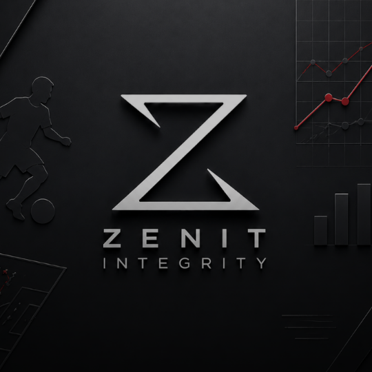
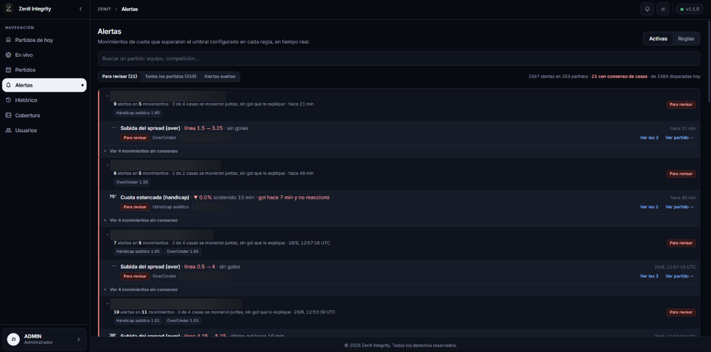
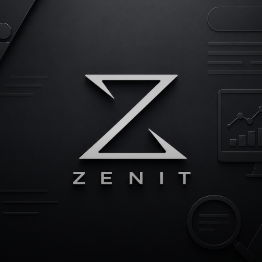
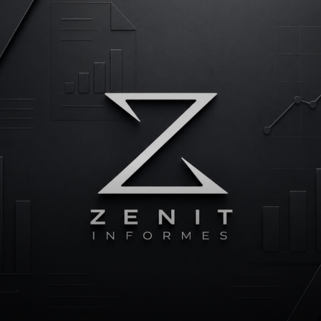
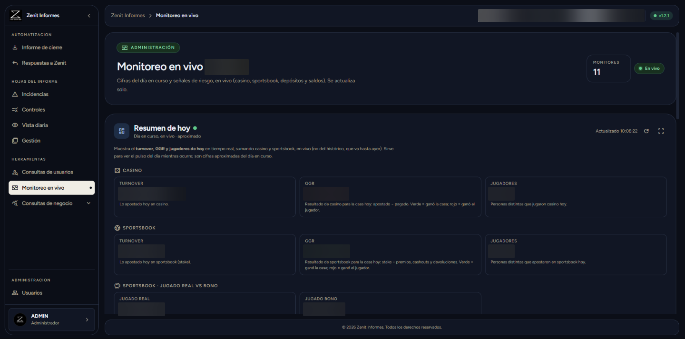

Backend
APIs REST con autenticación por sesión o JWT, ingesta en tiempo real por WebSocket y streaming al navegador con Server-Sent Events.
- Python
- Flask
- SQLAlchemy
- Alembic
- Java
- Spring Boot
PLAYER 01 · DISPONIBLE
CLASE
Construyo plataformas que hoy están en producción en la industria del gaming. Trabajo el ciclo completo: modelo la base de datos, levanto la API con Python y Flask, y construyo la interfaz en React y TypeScript hasta que se siente rápida y obvia de usar.
NOMBRE
SEBASTIAN OSPINA
ROL
FULL STACK DEV
GREMIO
ATOMO GAMING
BASE
ARMENIA, QUINDÍO · CO
PULSA ▶ PARA CONTINUAR
// Inventario
Las herramientas que uso a diario y para qué las uso realmente.
APIs REST con autenticación por sesión o JWT, ingesta en tiempo real por WebSocket y streaming al navegador con Server-Sent Events.
Interfaces tipadas y responsivas, con tablas pesadas que no se traban y gráficas que se entienden de un vistazo.
Modelado relacional, migraciones versionadas y despliegue en contenedores orquestados con Kubernetes.
// Registro de misiones
Plataformas que construyo en Atomo Gaming. Código privado, pero acá está qué resuelven, con qué están hechas y qué escala manejan.


Captura real · datos sensibles difuminados
Monitoreo de integridad en apuestas deportivas. Lo construimos desde cero en equipo: vigila en tiempo real las cuotas de 5 casas de apuestas y detecta patrones asociados a manipulación de resultados. El motor de alertas tiene 8 tipos de regla configurables —movimiento brusco, divergencia contra el consenso, retiro de cuota, ensanchamiento de spread—, cada una con su umbral, ventana y período de enfriamiento.
Detalles Ingesta por WebSocket · streaming con SSE · 19 migraciones versionadas con Alembic · desplegado en Kubernetes

Interfaz recreada · la captura real contiene datos de clientes
La plataforma con la que el área de soporte consulta cuentas de jugadores, gestiona retiros en cuatro pasarelas de pago y audita sesiones de casino con GGR y RTP. La construí en dupla con otro programador. Incluye búsqueda masiva por lotes, verificación documental y exportación directa a Excel.
Detalles Reemplaza el salto entre cinco sistemas por una sola consulta


Captura real · datos sensibles difuminados
Consolida los informes de operación de las marcas de Ecuador, Panamá y
Guatemala, integrándose con tres backoffices externos. Consulta las APIs,
cruza los datos y entrega los reportes ya formateados —GGR, controles, incidencias, sesiones y
transferencias— en un clic. Dockerizado, con autenticación por sesión, contraseñas con hash
scrypt y cookies HttpOnly.
Detalles Convierte horas de armado manual en Excel en un proceso automático
Otras misiones
Registro y análisis estadístico de rondas: historial de multiplicadores, frecuencias, rachas y probabilidad por frecuencia histórica.
Plataforma tipo SaaS con Spring Boot, autenticación JWT, roles ADMIN/USER, API documentada con Swagger y dashboard en React.
Panel de gestión educativa: CRUD de usuarios, métricas de reportes, exportación a CSV/JSON, modo oscuro y atajos de teclado.
Aplicación Java conectada a base de datos relacional: modelado de entidades, consultas SQL y persistencia desde código.
Proyecto en Java enfocado en arquitectura y patrones de diseño: separación de responsabilidades y código mantenible.
Sitio construido con JavaScript, HTML y CSS puros, cuidando la estructura semántica y la presentación.
// Registro de partida
De reparar impresoras a construir plataformas de tiempo real. Cada nivel enseñó algo que uso hoy.
Desarrollador Full-Stack · Armenia, Quindío
Construyo las plataformas internas de la operación: Zenit Integrity, Zenit y Zenit Informes, en equipo. Diseño de esquemas en PostgreSQL, contenedores Docker y despliegue en Kubernetes.
Programador de Inteligencia Artificial · Remoto
Automaticé chatbots de atención para 5 empresas con plataformas low-code sobre Microsoft Azure, y analicé datos de ventas para los informes de seguimiento comercial del área.
Coordinador de Servicios y Soporte Postventa
Gestioné los servicios de dos sedes y atendí el soporte postventa de los estudiantes, resolviendo incidencias académicas y administrativas.
Desarrollador Web y Analista de Marketing Digital
Desarrollé blogs y páginas web en HTML con una producción sostenida de 3 por día, y medí el desempeño de campañas publicitarias con Google Analytics.
Técnico de Soporte en Cómputo
Diagnostiqué y reparé impresoras y equipos de cómputo, atendiendo entre 3 y 4 equipos por día.
Ingeniería de Software · Armenia, Quindío
Cursé 8 de 10 semestres. La base de fundamentos —algoritmos, estructuras de datos, bases de datos y patrones de diseño— es la que sostiene todo lo que construyo hoy.
Certificaciones
// Ficha de personaje
Soy Sebastian, desarrollador Full Stack en Atomo Gaming. Me interesa el punto donde una idea se convierte en algo que la gente puede usar sin pensarlo. No me quedo solo en la interfaz ni solo en el servidor: prefiero entender el problema entero y responder por el resultado.
Llegué al software por un camino poco recto —soporte técnico, marketing, coordinación— y eso me dejó algo útil: sé escuchar a quien va a usar la herramienta. Hoy trabajo con Python y Flask en el backend, React y TypeScript en el frontend, y PostgreSQL, Docker y Kubernetes para que todo sea reproducible y despliegue sin sorpresas.
// Modo multijugador
Cuéntame qué necesitas construir. Respondo rápido y sin vueltas.